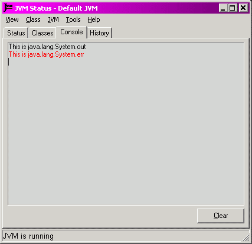

|
JNIPort for Dolphin Smalltalk |
|
|
Back to Goodies |
The Status Monitor's Console Page
The Status Page is a plug-in page for the Status
Monitor. It displays whatever text has been sent to the Java console streams
(  It replaces the Java console streams with custom streams that use callbacks to redirect the data into Dolphin, where it is picked up and added to the text panel. Data from the two streams are displayed in black (for the standard output stream) and red (for the standard error stream). This page will only work if callbacks are configured, otherwise it will display a warning message. This page is not displayed by default because it directly affects the working of the Java runtime and of JNIPort. To turn it on, use the 'View⇒Visible pages⇒Console' menu item. |
Copyright © Chris Uppal, 2003-2005
Java, JNI (probably), JVM (possibly), and God knows what else, are trademarks of Sun Microsystems, Inc.